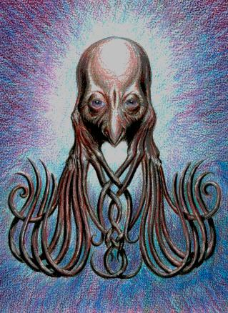

Little Watcher (Part 2)
by
Brett Davidson
Kore has again dreamed of the glistening flower, she tells Pallin, narrating it for him as if it is happening at the very time that she speaks. Her eyes are wide and frightened in the pale oval of her face, not at all as reassuring as they were in his own dream.
This thing is a ‘Little Watcher’, she says. Its body becomes a little more clear to her as it rises to the surface. Around that dome as it rises, stirring the fluid, there are odd, coiled things, slender branches all in parallel, like fingers vastly elongated and depending from a supple wrist. Then she sees that they are connected with the round central mass, which is a head, though she is still uncertain as to its exact form. She can’t tell how large it is or even whether it is evenly spherical, oblate or prolate, though perhaps it is the latter. The head seems much larger than her own body, larger than its own body, if it has one at all. The fluid seems to curdle or become thicker, hiding the thing from her, only to reveal it again, a little different in its orientation this time, and now she sees that it has eyes. They are enormous, staring back at her, with pink irises like her own. She feels that odd sense of recognition once more, she says, as if she looks into a mirror. The hand flutters or beckons and the dream ends.
She is silent for a while, looking to him for interpretations and answers. He has none yet. “Can you draw this thing?” he asks.
“I don’t know...” She rifles amongst her things and then finds a slate and styli. She lays the styli out neatly in a row and tunes them in a sequence of the five primary colours and then holds up two. “It was mainly this colour… and a bit of this.” Red and infrared or ulfire.
Pallin nods, encouraging her.
Kore puts her hand to her chin and tilts her head in imitation of one of Pallin’s own mannerisms. She is earnest and surprisingly calm; children can be very pragmatic once they have a definite goal in mind, and Kore has been trained in the art of description, so that she is eager to impress with her performance. She starts to draw, erasing her first efforts, but gaining confidence. The shape that emerges on the paper is a looping scribble at first as she tries to suggest the surrounding fluid so that it looks very much like a flower or a cloud of smoke, but as she builds up its form, pausing now and again to chew a knuckle thoughtfully, he sees that it is definitely a head or face of some sort. It is chinless and framed by tangled lines that he assumes are meant to be the thing’s hands or tentacles, which emerge from where its lower jaw or cheeks would be. The eyes are enormous ruby orbs and would be conventionally toy-like if she wasn’t so careful to depict wrinkles and folds about their corners. That detail, in all its naïve banality, drives home the essential veracity of her dream.
She holds up the completed picture, grinning proudly. His approval will be the one certainty that he can give her. “Yes,” he says. “That’s very good. You have excellent vision.”
The reports of the image casts brought to Pallin’s ‘Observatory’ in the following days have an increased intensity. More and more of them are clearly alternative humanoid morphologies: eyes appear under thick brow ridges or none at all; hand prints of various proportions and allocations of digits are embossed on walls and floors; mouths that are lipless slits, tight little puckers or strange beak-like V-shapes begin to smile and gape. “Ulla, ulla,” cries one.
The Eugenicists, with their disdain for the abhuman, are particularly distressed by these.
The other patterns, at first seen mostly in the library tiles, which seemed like faces, continue to only seem like faces. On barer surfaces they are more abstract, albeit complicated, making huge labyrinths and mandalas in the halls and galleries in shades of actinic jale at the edge of perception. People find their thoughts twisted oddly by looking at them, and they are swiftly covered over. Pallin is the first to notice that they resemble the geoglyphs that surround the Watchers. The interpretation of their significance is ambiguous and uncertain.
There appears to be a rough demarcation between the two types of signs, both in form and location. The most human, or those that resemble variations of what a human being could be, tend to concentrate themselves around the Monstruwacan compound where Kore is housed. Obviously she is the eye of this particular storm. Because the order enjoys a high level of security, it is comparatively easy to suppress all overt reports of these manifestations, though rumours spread nonetheless.
The second type, the fractal labyrinth motif, appears more diffusely and more randomly in its range, but still has an overall tendency to gather about Kore.
Despite their differences, there appears to be some significant overlap between the two types in their range, though it is uncertain whether this is concert or conflict. Hypotheses are presented at a Combined Council meeting of select guild representatives.
Bearing in mind the apparent blinding of the South Watcher and the images of the ‘Little Watcher’ that Kore has seen, one Monstruwacan agrees with Pallin’s suggestion that a previously unperceived force is active. Maybe it is one that has its own interest in humanity and is jealous of the Watchers. “Does it intend good or ill?” he wonders.
“That last question is meaningless,” objects a Eugenicist. “All abhuman forces, whatever good they do by their own reasoning — if such a term can be applied — are only briefly and by coincidence benign, because they remain at root abhuman.”
Another Monstruwacan known well to Pallin as a skilled interpreter of signs notes that the gaze of the Watchers is an active one. “In looking, they ask questions and in asking questions, they induce answers,” she explains. “What they look upon is not simply destroyed, but is often compelled to iterate all of the latent possibilities of its being.” Those seen previously by Watchers, with the recent exception of Pallin being the most notable, have sometimes died by the incarnation of their own contradictions.
“Are these eyes and faces in the walls the answers that the Redoubt gives to the sight of the Watcher of the South?” asks someone.
“Perhaps these iterations have their own life and have become independent,” suggests another. “Perhaps similar methods are used by two sides,” argues the first. “There is still the essential difference in form and mode.”
“Consider the forms that we see,” Pallin’s friend points out. “Those closest to the attractor, Kore, are the might-have-beens of human evolution. Some preceded the present form cultivated by the Eugenicists, but others mirror speculations found in the libraries on the matter of a linearly continued evolution, as do her dreams. There is some coherence in the line shown here, not contradiction. It would seem to suggest, if not an absolute singularity of identity, a broadly human nature. Maybe it is an ally.”
The Eugenicist visibly shudders. “There can be no allies among those that are by definition divergent from the bloodlines of the Redoubt,” he sneers. “Kore should have been slain the moment these signs were seen to centre about her. The Monstruwacans should never even have sanctioned her conception.”
Pallin does not speak during this meeting. What he might have said is said for him by others. He need not even speak in defence of Kore, because it is a certainty beyond discussion that he would fight for her with his very life should that be necessary. Instead he listens and he thinks. He has received reports of other knots of activity, less intense than that surrounding Kore, but portentous nonetheless. There are other attractors now and they will have to be identified and monitored. The battle is becoming a campaign and while many here see this gathering as marking an important turning point in itself, he sees it himself as but one stage in the working out of a grander strategy. These people are to him as symptomatic of the situation as the image castings are, not the drivers of events themselves, and he reads them as he reads any omen.
As the meeting closes and the participants depart, Pallin falls in with the Eugenicist. He does not like the man, but he needs him at this moment, and consciously plays on his limp as he walks up to him as a less-than-subtle reminder of who he is and what he has done, as if his face was not already well-known.
“Your time please, Master Eugenicist.”
The guilds of the Redoubt intermesh and turn together like the mechanisms of a clock, but that meshing does not conceal the hegemony of the Monstruwacans. The man in white bows to the man in the deep wine purple when he is directly addressed. “Master Lector,” he acknowledges.
Pallin feigns a stiffness in his back and inclines his head rather less than the other man and holds up his hand, palm open. “Pallin ex Asphodelos.”
The Eugenicist returns the gesture nervously. He knows very well who he is, he knows that Kore is his charge. “Of course,” he says. “Corder ex Maera.” Is this his name, or his title?
“I have an inquiry regarding the status of my line.”
“Ah.” Corder is uncomfortable. “Tell me, does this concern... your family?” The Monstruwacans are themselves one family. To preserve the appearance of neutrality the most senior members take vows surrendering all other affiliations and claims to inheritance, but certain scions of the order such as Pallin are a special case. The genes of survivors are too valuable to waste, after all.
“It does, and more.”
“Ah. This is perhaps not the ideal time and place.”
“No, it is not,” Pallin agrees.
An appointment is made and the two go their separate ways.
As an immediate response to the infiltrations, the Electric Circle has more power allocated to its circuit and its frequency is adjusted to most closely match the known radiations of the Watchers. It appears that the fractals are less common thereafter, whereas the anthropomorphic forms are more common. Apparently the latter now have an independent basis of life within the substance of the Redoubt, like an infection.
There is an indication that the strengthening of the Circle seems to intensify the hunger of the Watchers and the Southern monster seems to stare with its full intensity again. Even Pallin does not dare look directly at it now.
The Tower still scans the remainder of the Land as assiduously as ever, but makes only the most cursory observations of the Watchers, sufficient to confirm that they are, for the time being, utterly still. He prepares a report on this state of tension, which is thick with questions and cautionary statements.
Pallin strolls a public viewing gallery with his characteristic rolling walk. People watch him as he passes, imagining that he has briefly descended among them from his constant vigil in the Tower of Observation. He is aware of this.
Amongst the rose vines and cultivated clan Fey-trees, there are pools of water inhabited by luminous shrimp. They flicker like sparks or stars. He leans over one pool, looking down at his reflection, and his Watchman’s gorget catches the light, its silver crescent shining under his face like a storybook moon. For luck, though he does not believe in luck, he drops a coin into the water. The splash shatters his reflection and the coin falls fluttering slowly into the darkness, making the shrimp scatter and fade.
The demonstration has not provoked any insight. He grunts and continues on his way along the gallery.
There are virtual windows that look out on to the Night Land. Their vistas are synthetic, composed not only of the infrared to ultraviolet range of normal human vision, but other frequencies as well. However, certain features and bands are edited from the view and the scenes that they show may as well be fixed murals. The Watchers, for instance, are mere caricatures, and he is amazed that these people could be so enthralled by such effigies. And yet they are.
He snatches a glance of the Land himself. Far below, a small patch of warmth moves or flickers. Above, in the Tower, someone will be noticing this and classifying it as a volcanic event or living creature. One of the young seers may be peering beneath the surface and finding something more significant, and the thing might be looking back. Yes, anything could be happening, under the most banal of signs. He snorts at his unguided concern and turns away. Watching him, the crowd that has gathered parts like a curtain to reveal a mural that has been painted on the opposite wall. It is an old picture, and he does not like it. It depicts himself in battle with some creature or other that he has never seen against the looming backdrop of what is supposed to be a Watcher. The artist who created this work is famous and it is much an exercise of artistic heroism as it is an icon of his own cult. He wishes that he did not feel such contempt for the adulation of these people and puts on a grimace that will be seen as an appreciative smile. It is his duty to make sure that they remain brave.
Increasingly, the Monstruwacans watch their own people now. He has seen people who have stood rooted to the same spot in this gallery when he has passed them at intervals of several hours and returned again and again days later. There are people in the Redoubt, entire cultures, that conceive too clearly and crudely of their tenure in the ultimate age of human existence and are paralysed by this conviction. He almost envies their passivity, but not quite. Something will break this tension, or it will break itself and the results will be terrible. The Watch knows this too.
He is late for his appointment with the Eugenicist and leaves the gallery, his own legend swirling in his wake like the trailings of the Watchers.
To his surprise, it is an unknown woman who meets Pallin in the College of Eugenics. “Master Corder is indisposed,” she explains. “I am also of his clan. My name is Laschi.”
He raises an eyebrow. Surely the man had not been so intimidated? More likely he is trying to avoid a conflict of interest if he is to attend further Combined Council meetings. It is of no matter; he has no concern with the internal politics of the Eugenicist’s guild. He bows and holds up his palm in acknowledgment of her role. “Respected Lady, I understand. Please pass on my wishes for a speedy recovery.”
“I will.”
She leads him to her office and they are seated. On her desk of gleaming deep ulfire heartwood there are three grey alloy oblongs with rounded edges and corners. Each is a book, pressure-sealed in its own binding with neutral gasses. She releases the seals of each, which hiss sharply as their internal pressure equalises, and opens them for his inspection. Pallin notes the titles and is pleased. She is has received his latest reports and is well-prepared. Time will not be wasted.
Laschi indicates the first of the books, which has shining new pages of metal added. “This is your own genealogy,” she explains.
“Of course.”
“I have read stories of your exploits.”
He keeps a neutral expression. Fame is a poor payment for the lives of his comrades, but it has its uses. She is not unattractive, he notices.
“Of your adventures in the Land,” she continues. “You slew monsters and abhumans, you confronted a rogue manshonyagger in the heart of the Dark Palace and lately you have gazed upon a Watcher, unshielded.”
“You must feel vindicated,” he says with a note of irony.
She nods, interpreting his tone as modesty. “Indeed. I am pleased to say that your children have been granted the right of reproduction and we are assessing a pool of candidate mates for their selection now. We think that in some generations there will be a line of people of true human stock who may nonetheless be able to survive in the Night Land.”
He does not shake his head, despite his scepticism. He does not doubt the ability of the Eugenicists or the sincerity of this woman, but he does doubt the point of their aim. “Only the Land?”
“Where else is there?”
“Of course.” It occurs to him that he should speak to some of his children to offer congratulations. Again, this will require an appointment and he defers the arrangement.
“You must be pleased.”
“I am.”
She notes his reticence, even if she does not understand it and forwards the second book, which also has new pages. “This is the genealogical record of Kore ex Timarchos.”
He scans the lines. “She will be of age soon,” he says.
“That is correct. I have consulted with the Lady Hecane and while the time is not yet, it will be soon. A decision must be made.”
“Corder spoke rather intemperately.”
“I’m afraid that I am not privy to the minutes of Combined Council meetings,” she says in an obliquely apologetic tone.
“No, you are not, but I note that there is some concern.”
She nods. “There is. Though we depend upon them, we must always be cautious with our seers, must we not?”
“We must,” he admits. He closes the book. “Tell me of these Little Watchers.”
The last book is slim, and much older than the others. There are no new pages and the set-speech dialect is archaic. There are numerous annotations in the spacious margins explaining now-obscure terms and usages. Despite its great age, it is only the last of a relay of copies.
“This is what we think relates most closely to Kore’s descriptions of a Little Watcher.”
The book concerns human evolution, being specifically devoted to some of the more outré possibilities envisaged before the Eugenicists determined their own programmes. It has most certainly come from the deepest secret archives and has been released for the first time in scores of millennia only because of the needs of the current circumstances.
He reads. There are charts extrapolating cranial growth, commentaries on the redundancy of a digestive system and a rigid skeleton, the importance of the eye and the hand and so on. There is a note that the most distant vertebrate ancestors that crawled onto the land from the sea had eight digits instead of five and that the reactivation of certain genes might allow their redevelopment. An illustration is presented and inevitably, it is only a more refined version of Kore’s drawing.
“Were creatures like this ever bred?” he asks, concealing any hint of recognition. Laschi’s mental reaction is so immediate and strong that he doesn’t even need to see her face to know the answer. “No, of course not. Are there fossils of this or any intermediate stage?”
“We are not aware of any. Perhaps the Scholars have records from expeditions into the Land?”
“There are no reports of fossils resembling this creature from this or any historical age,” he tells her, knowing that a negative is by definition unprovable. “What is your interpretation?”
“That is your prerogative, Master Monstruwacan.”
He looks directly into her mind for the first time. It is an impolite thing to do, especially as she is not deliberately concealing anything from him, but he thinks that perhaps he can make more sense of her incoherent store of data than she can herself. He can tell that she fears the possibility of a rogue genetic engineer having been at work. Strictly speaking, it is not impossible that someone or something may be conducting experiments outside of the Redoubt, and while many of the creatures of the Night Land have branched from the human root, they have largely done so through natural, albeit accelerated evolution, and very few would have the inclination or technical means to deliberately tamper with their own germ plasm. Beings such as the Silent Ones might perhaps do so, but this creature is closer to the vanishing point of the true human line than those degraded beings, and in any case, they are well-adapted to the Land and would have no cause to bend their path now. Of course where the Silent Ones are concerned, nothing is certain, but they have never been image-casters and Pallin is sure that they are not associated with these apparitions.
“As far as I can determine, such things exist entirely in the realm of our unfulfilled dreams and visions,” he tells Laschi.
“Something is disturbing you today,” Hecane says as they programme the game table.
He nods and grunts at this understatement and she laughs at him. He looks up, almost hurt by this, and realises that he can smile. Her burden is no less than his own.
“Which suite of pieces do you recommend?” he asks. The pattern of tessellations is one called the Garden of Forking Paths today and he is unused to it. “Which mode?”
She picks up a piece and examines it, then rolls it against her lower lip thoughtfully as she watches him. The piece is a red one. “Errant,” she decides.
“Ah.” He is thoughtful for a moment. “Do you know, I had a most interesting or amusing report from a librarian today?”
“‘Interesting or amusing’?” she repeats quizzically.
He smiles wryly. “Depending on how one chooses to interpret it,” he says.
“Is this our game now?” she asks. “Or should I just ask what it was that was reported?”
He relents. “Kore, in her early monologue in the Tower, referred to ‘counting sideways’. I am not a mathematician, but apparently there are whole schools of thought devoted to imaginary numbers, negative numbers, numbers that sit sideways… in any case, this librarian told me that an antique clock that was supposed to ‘count sideways in time’ has suddenly run wild and I was intrigued.”
Hecane chortles. “I see… then obviously the causal logic for this game should be synchronous and entangled. We will make divergent moves simultaneously.”
“It seems appropriate.” Almost all of their previous games have essentially been discussions of a state of siege about the Redoubt. Their choices are unusual in suggesting a random and uncontrollable wandering away from the centre, though the synchronous causality will still bind the branching paths of discourse together. He is intrigued: the game could be recursive, dissolve into meaningless variations of the same narrow theme, lock into circles of pedantic rigidity, or it could explode into truly alien possibilities which would be no less deadly to their pieces.
They begin to lay the pieces out on the tabletop.
Pallin is polishing his old Watch souvenir when an alarm sounds. The news is not good. Kore has now begun to exhibit manifestations of her visions in her flesh. Memories of the things and forces that afflicted his men Out in the Land rush through his mind, and he almost runs to Kore’s domicile.
He arrives at the central cell of the Observatory winded, and the junction of his prosthetic leg aches, reminding him too well that his limp is no affectation. He ignores the pain and scans the faces of the guards and doctors and the tenor of their minds too, but they are all wearing masks and their thoughts are too confused to reveal anything of substance. Each, indeed, seems to have seen something entirely different. The electronic logs are no better, being hopeless blurs of static and contradiction. He clamps a mask of calm assurance over his own face and steps into Kore’s cell himself.
The room contains clutters of sophisticated observational equipment, but it is not small or uncomfortable. The Monstruwacans have tended towards austerity in their long history, but not cruelty or callousness. They have allowed the girl many familiar things: favourite clothes, furniture, a silk tapestry, cages of singing insects. There is the odd toy too: a motley clown lies on the floor seeming to indicate nothing more than untidiness.
He had expected the apparition of something monstrous, perhaps pools of blood, but the child appears at first to be relatively safe and normal, though she is trembling in terror. This is almost a relief to him, giving him the false hope that whatever happened has finished, to leave her in this state, though he soon sees that this is not precisely the case.
The girl is crouched at the head of her bed, her knees drawn up to her chest, the bedding wrapped and knotted around her like a cocoon. Her round face stares at him, huge-eyed at the peak of the whorl of embroidered fabric. It is as if, he cannot help but think, she is the centre of a huge flower, or a miniature of a Watcher rising out of the palimpsest plain of the Night Land.
He sits on the bed beside her, leans over her and whispers gentle commands. At his prompting, a pale hand emerges from under the quilt. The fingers might perhaps be elongated and move as if they are without rigid bones, but it is hard to tell. She could well be performing like a Masquer, her gestures describing a state so well as to make it visible. The alarm, the panic might well be the result of a delusion, no image-casting at all.
He almost slaps himself. These defensive thoughts are unworthy of him. The people who made the reports, however inarticulate they may be, saw something strange and he must observe this strangeness without false hope or fear. He focuses on the hand, counting her fingers, and, following his cue, Kore looks too. There are five fingers, slender, but not overlong.
There are eight fingers.
There are five.
She snatches the hand under the quilt and shudders. He places his hand on her shoulder and is not sure whether it is her reaction or his own or something else that makes it feel as if he has received an electric shock. He coaxes her to show her hand again and it creeps out as if it has a life of its own, a pale spider. Five, he counts. Eight. The two numbers are true at once, overlaid.
“What is happening to me?” she wails.
Neither can say, though they know in a way that cannot be spoken. He shakes his head. He picks up the doll for her, but she will not reach out to take it.
There is another Combined Council meeting is response to the latest manifestations. The meeting is quicker than the last, the immediacy of the crisis having concentrated everyone’s minds marvelously, though it might be said that this was only a facile demonstration of deeper forces.
Corder, bearing no sign of recent illness, is outspoken, probably fearing that his guild will be held responsible for what is, to them, an experiment gone terribly awry and threatening the status of their other ventures. Kore must be completely isolated, he demands, held in a cell outside of the body of the arcology itself, or even eliminated and her kin neutered. There is a certain basic agreement implicit in even the most overt criticisms of this proposal.
Pallin could attack him directly, but he does not. Instead he draws on his own position, hinting not too subtly at the hegemony of the Monstruwacan Order and characterising Kore as a phenomenon to be observed. The Eugenicists, he suggests, are the instruments by which the order observes the omens of humanity. What is happening to Kore, it is quite clear, is an expression of what is immanent in humanity, no matter what its cause might be.
“Is she not therefore a branch to be pruned?” Corder suggests acidly.
“No,” insists Pallin. “Not yet. We of the order claim our prerogative. You have provided us with the greatest of opportunities to read the influences of the Land by one such as myself… and you will observe me.”
Most notice only the display of authority, but Corder, for all his defensiveness and bluster, is not a fool. Pallin is the other great experiment of the Eugenicists. He knows, of course, that he has stacked the rights of his progeny in a wager against those of Kore in a complex game, and he does not love himself for the fact that it has always been his nature to calculate and gamble with lives. However, he thinks bitterly, the Eugencists claimed his children when they claimed him, whereas he has chosen Kore by what he thinks is his will, and if anything so trite as worth is to be calculated, he will count the coins that are still truly his own.
Too soon there is another alert, and Pallin once again rushes to Kore’s cell, accompanied by a Watchman whom he has nominated to watch him on behalf of the Eugenicists.
“See, don’t you see?” asks the doctor, the black lenses of his protective mask glinting. “There.”
Those lenses have not protected you from fascination, have they? Pallin thinks, and looks at what lies on the bed.
There is an adolescent girl, an adult, an old woman. All three look back at him with the pink eyes of the Timarchos line. They are all Kore.
These images flicker, like an illusion of faces meeting to make the silhouette of a candlestick or vice versa, each aspect on either side of possibility, neither of which is truer than the other. He sees hands with eight fingers and five fingers.
Pallin can tell without looking over his shoulder that the Watchman grips his killing instrument all the more tightly, his every instinct calling out for murder, but he doesn’t even need to hold up his hand to forestall the reflex. The man is one of his own and too well trained to need restraint and watches alongside his old general.
There is something demonic, dark and browless. It is a simian ancestor of humanity, Pallin remembers from the files. Other forms alternate: a figure almost like the familiar girl Kore, but somehow altered to appear as an adult that has retained her childish characteristics. And then there is another quasi-simian form, but white-pelted and its eyes glittering with a peculiar intelligence. There is a debate being enacted here, he senses; possibilities and fates are being weighed in relation to each other.
The reified head of the definitive Little Watcher appears for a while, overdrawing all of the other images and appearing to float in a bubble of air before him. It is utterly familiar to him from the drawings that he has seen already: it appears to be all head, its brow a nearly spherical dome, its eyes huge and its fingers trailing like vines. The mouth is a small fleshy beak, a V-shape that seems to smile at him slyly, and the folds at the corners of its eyes also seem to crinkle in amusement, but that could easily be only a personal interpretation. The vision evaporates.
The accustomed Kore groans and curls tightly about herself as the doctors close in.
By a pool, he leans with Hecane. He drops a coin, the resulting ripples of its splash breaking their faces into dancing reflections, and it falls down into the cold water to lie at the bottom with so many others. One shrimp follows the coin for a while, its legs beating furiously, but it soon gives up and returns to its normal circuits. “Very allegorical,” Hecane comments ironically.
“I always thought,” he responds, “that a successful allegory had to be without excessive ambiguity.”
Hecane raises an eyebrow. “Really? Did that seem too ambiguous to you?”
“In the end, I suppose not,” he says. “It’s only a coin, only a shrimp, only a pond.”
“Then I do not need to ask if you think that some potential value has been wasted or that you might feel an affinity with that simple creature or whether there is yet another meaning?”
“Oh no, not at all.”
“Comedy does not suit you, Pallin.”
The fact is that Pallin is no longer guardian to Kore except in that he guards her from those who would keep her. He has long outgrown the naïve belief that he is beholden to be a man of action, but even in the Tower of Observation, where it was his duty to sit and to observe, he had been complacent with his own legend and never felt the absolute powerlessness of the spectator as he does now. He knows that this state that he experiences now is inevitable and unalterable, but the last battle is breaking his selfish heart.
The siren in his room is triggered, sounding like the wails heard from the mouths in the walls, crying “Ulla, ulla.” He knows the process that began in the Tower will complete its cycle in Kore’s cell tonight. He rushes to her, the pain in his leg only goading him on.
He regards Kore one last time, or many times. She is blurred. The image-castings, if that is what they are, overlap. The young girl is there, and there are other forms too: the adult and aged women who will never grow naturally here, the primitive hominid, the blend of adult and child, the white brute. Seen mostly clearly of all there is the Little Watcher floating within a hazy mandorla or ring of light, its delicate, eight-fingered hands held wide and trembling like the wings of a butterfly about to fly away.
The Watchman and the doctors press themselves against the wall, their masks presenting nothing but reflections to its gaze. They make a semicircle around Pallin and it is only he who shows his own face and his own eyes.
“Ulla, pentiment!” it says and reaches out and a fingertip to brush his cheek, causing him to start. The Watchman seizes him and drags him back, but he slips out of his grasp.
“Sir! Are you harmed?”
“No, Captain, I am not.” He would return the touch, but he cannot move.
Those enormous eyes, the colour of the anachronistic roses, blink, and in a blink Kore or the compound of all that she might have been vanishes.
It is a sleep period, many days later, but he rises from his bed and stalks the Tower’s balcony, feeling like a ghost still. Insomnia gives him a certain clarity and detachment. Prudently, he is helmed and guarded, and while he looks to the various quarters of the horizon, mostly the Southern, he sees only voids at certain points. He contemplates one of these voids now.
This act, like his last expedition to the balcony, seems heroic and adds to his legend. Even his most recent actions build on his legend rather than undermining it. In the Great Hall of Honour there will stand a statue of Pallin ex Asphodelos in his broken armour. Indeed, one has been ready for years; its installation only awaits his death. This hardly matters to him because there will be no monument to Kore, though there may be a legend and a cult, of which he will not approve.
The experiments of the Eugencists have achieved what appears to be a clear outcome. Following the ratification of the Watch Captain’s report on his continued sanity, they will award unlimited rights to Pallin’s line. Meanwhile they will do their best to extinguish all trace of Kore’s, but he doubts that they will find many to neuter once the Little Watchers have finished their business. There are many reports now of other people undergoing metamorphoses and nobody dares approach them. Following his orders, the Monstruwacans will protect them until they are able to escape. Perhaps they should not be called Little Watchers, but Seekers.
Thus another ending of history is marked, he thinks. Kore has slipped our starless realm while we have ourselves and the eternal Watch at the End and Capstone of Time. We shall refine this state and remembrance will be our delight.
The Electric Circle flickered last night as it has never done before, and there was a tremor as the Watcher of the South took what amounted to a step. The Redoubt is thick with superstition as it has not been for millions of years and Pallin wishes that he could breathe the razor thin air of this altitude without artifice.
Again he ponders the manner in which the Great Watchers are fascinated by the Redoubt. The great arcology must appear as a towering furnace of energy, coruscating with milliards of sparks of fragmentary and ephemeral life. Its heat draws but scalds them. Image castings are sent as probes through the curtain of the Air Clog only to be cauterised instantly. They creep closer, but the ontology of humanity impresses itself hideously upon their bodies. We madden them and we petrify them. As they do us.
His hand strays to the silver crescent at his throat, touching the woman’s face there that looks out with her eyes unshielded.
We are too much alike in manner and too alien in essence to ever escape or know each other, he thinks, looking into the bland nothingness of his helm’s synthetic perception. Your temporary blindfold is gone now, but I wear my helm, poor Watcher, and I will die. What can be your escape?
Are the Little Watchers, Little Seekers, new or old Allies? Were they the creators of the Dome, the Eye Beam and the other influences that halted the advance of the five Great Watchers for a while? Are they image castings from the imagination of the Watcher of the South? Have they been induced from the collective imagination of humanity? In whose thrall are they? Are they their own? In whose thrall are we?
A litany. Pallin is clever in the making of litanies. The last question is easy to answer: humanity is in the thrall of the Great Watchers. Are a few of us being rescued by the ghosts of what we might have become? he asks himself. Is the whole history of the Last Redoubt therefore a lost opportunity only partially, desperately redeemed by a strange evacuation? Is there a brighter time somehow beside our own in time?
If so, he will never live to see it. He is a man of honour and knows that honour is the thin line that defines integrity when there is no hope. Only the past is open to him and he is pleased that it is full of glory.
There are increasing signs of change in his own hands and eyes now, but they are only the marks of age.
© 2002 by Brett Davidson.
Image also © by Brett Davidson.